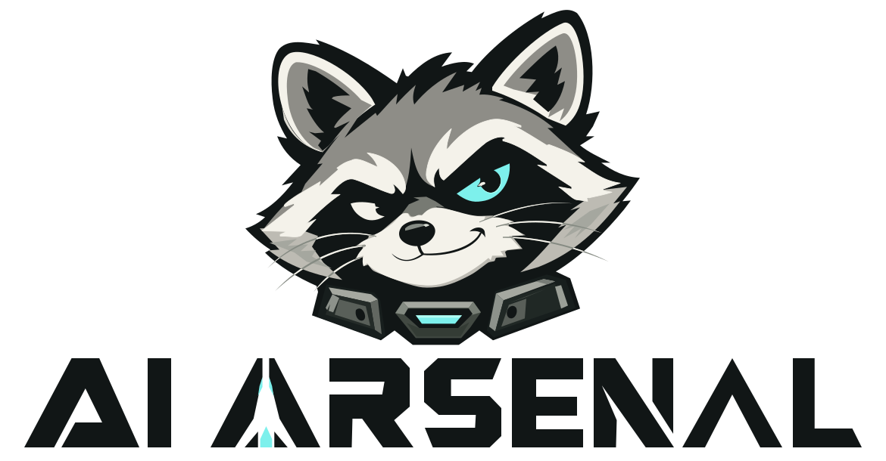

Skills, MCP, LLM, agents, and document knowledge bases — managed from a single admin console. Ships with an OpenAI-compatible gateway and an MCP gateway, plus Mac / Windows desktop clients, deployed on your own servers.
SKILL · LLM · MCP · DOC · KB · PROJECT · AGENT · CLIENT

Users / roles / menus / departments / posts · permissions down to buttons and data rows, enforced by Casbin RBAC · login and operation auditing
zip upload & parsing · security-scan interception (secrets / dangerous scripts) · vector retrieval · iFlytek marketplace import
OpenAI-compatible plus native Anthropic / Gemini endpoints · virtual keys · three-tier budget billing · routing, polling & health probing
SSE / streamable-http dual-protocol gateway · OAuth clients & tokens · $smart vector routing · enterprise capability toolsets
upload / preview / chunked vector embeddings · semantic retrieval · row-level read-write authorization · scheduled sync from web / database / API / object-storage sources
projects / tasks / boards · milestones · reports & scheduling · custom fields, bound to Agent / Skill / KB / LLM / MCP
instance lifecycle (Docker / Tencent Cloud CVM) · remote desktop · web terminal · workspace files · backup & rolling release · audit & risk monitoring
Tauri 2 on both platforms · install / start-stop OpenClaw / Hermes / Obsidian · WeChat QR binding · Mac / Windows desktop nodes (screen capture / mouse & keyboard control)
PlannedWeChat is live; DingTalk / WeCom / Feishu / Telegram are next
PlannedScreen recording & camera capture (screen.record / camera), completed on both Mac and Windows
Planneddocsource already pulls from Feishu / DingTalk / Tencent Docs / Notion; next, unify retrieval with in-app documents and knowledge bases
Clone the repository from GitHub and prepare the runtime as described in the README (Node / Go / PostgreSQL + pgvector / Redis).
git clone https://github.com/aiarsenal/aiarsenal.git cd aiarsenal
The script initializes 10 databases (baseline SQL is baked in, no migrations), builds frontend and backend, and starts three services.
bash scripts/local-test.sh deploy # macOS bash scripts/local-test-win.sh deploy # Windows (Git Bash)
Default account hi / aiarsenal123 (see "Default accounts" in the README; change it immediately after first login).
One command for systemd + nginx; desktop clients (macOS .dmg / Windows .msi) are available from GitHub Releases and connect to your own server.
sudo bash deploy.sh rebuild-db # first-time database setup (⚠️ wipes and rebuilds) sudo bash deploy.sh test # test environment: plain HTTP + /etc/hosts
Full steps and desktop-client notes in the README · Downloads in Releases
AI Arsenal is an enterprise AI application management platform, co-written end to end with GLM. All eight modules — system, Skill, LLM, MCP, docs & knowledge base, projects, agents, and clients — are implemented and open-sourced under Apache-2.0. Deployment trouble? Open an Issue. Improvements are welcome as PRs.